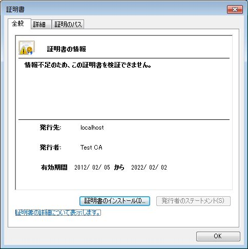
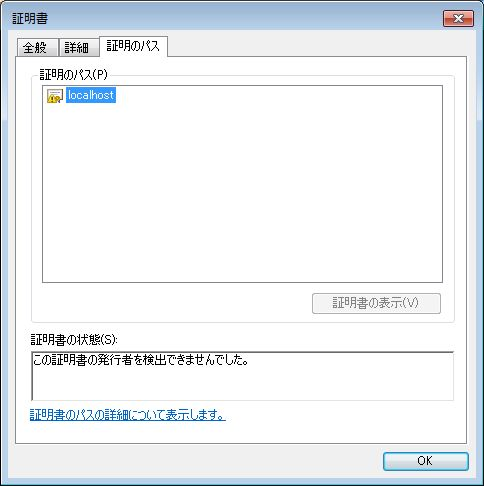
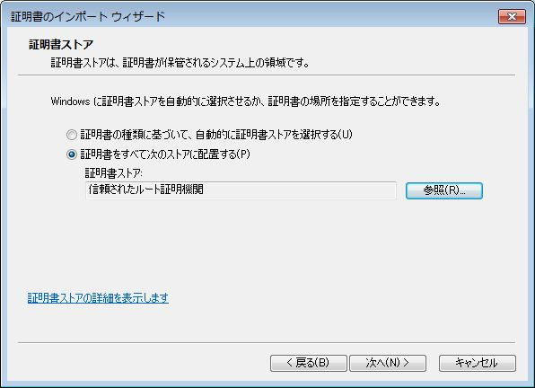
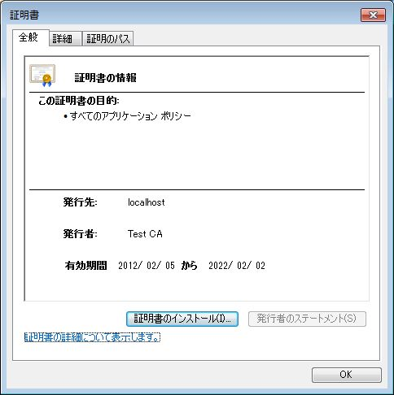
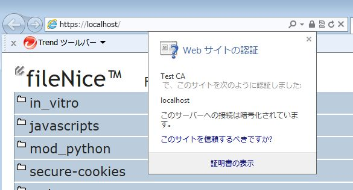
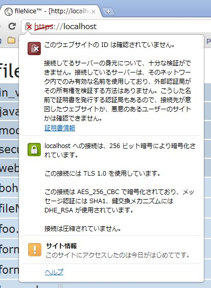
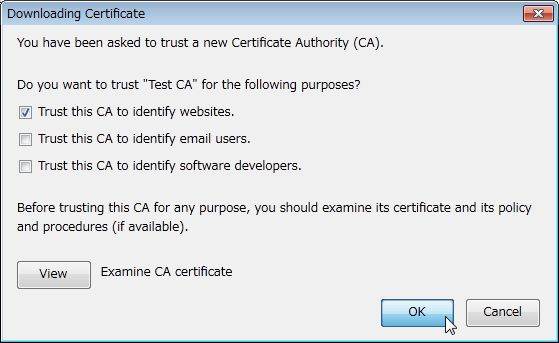
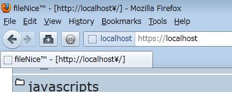
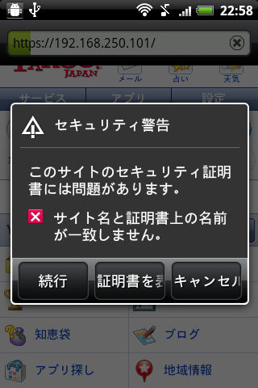
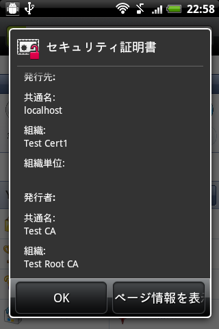

OpenSSLコマンドを使った「テストCA環境の準備」「証明書要求の作成」「テストCA環境で証明書の発行」を駆け足で紹介します。作業ディレクトリは特に指定がなければお好みのカレントディレクトリです。
※なお今回は秘密鍵を暗号化せずに取り扱っているため、証明書作成や署名で一切パスフレーズを訊かれません。実際は非常に危険な状態となりますので、ご注意ください。
テスト用ルート証明書の準備
テスト用ルート証明書のRSA秘密鍵を生成：
> openssl genrsa 2048 > testca_seckey.pem
テスト用ルート証明書のための設定ファイル testca_conf_req.txt を準備：
[req] prompt = no distinguished_name = testca_dn x509_extensions = testca_ext [testca_dn] countryName = JP stateOrProvinceName = Tokyo organizationName = Test Root CA commonName = Test CA emailAddress = ca@example.com [testca_ext] basicConstraints = CA:true
テスト用ルート証明書を生成：
> openssl req -config testca_conf_req.txt -new -x509 -sha1 -days 3650 -key testca_seckey.pem > testca.crt "-new" : 新しい証明書要求を作成。"-in"オプションや標準入力は無視される。 "-x509" : 証明書要求ではなくX509証明書自体を発行する。
テスト用ルート証明書で署名する証明書要求を作成
秘密鍵を生成：
> openssl genrsa 2048 > testcert1_seckey.pem
証明書要求用の設定ファイル testcert1_conf.txt を準備：
[req] prompt = no distinguished_name = testcert1_dn [testcert1_dn] countryName = JP stateOrProvinceName = Tokyo organizationName = Test Cert1 commonName = localhost emailAddress = testcert1@example.com
証明書要求を生成：
> openssl req -config testcert1_conf.txt -new -sha1 -days 3650 -key testcert1_seckey.pem > testcert1.csr
テストCA環境の準備と署名
テストCA環境用のディレクトリと初期設定ファイルを準備する。
"C:/temp" 以下に次のようなファイルを準備する。
C:/temp/
testca.crt : テスト用ルート証明書をコピーしてくる
testca_seckey.pem : テスト用ルート証明書の秘密鍵をコピーしてくる
index.txt : 中身空っぽ。
serial.txt : "01"とだけ書かれたテキストファイル
certs/ : 空ディレクトリ
テストCA環境用の設定ファイル testca_conf_ca.txt を準備：
[ca] default_ca = testca [testca] dir = C:/temp certificate = $dir/testca.crt database = $dir/index.txt new_certs_dir = $dir/certs private_key = $dir/testca_seckey.pem serial = $dir/serial.txt default_days = 3650 default_md = sha1 policy = testca_policy [testca_policy] countryName = supplied stateOrProvinceName = supplied organizationName = supplied organizationalUnitName = optional commonName = supplied emailAddress = supplied
署名：
> openssl ca -config testca_conf_ca.txt -in testcert1.csr -batch
Using configuration from testca_conf_ca.txt
Loading 'screen' into random state - done
Check that the request matches the signature
Signature ok
The Subject's Distinguished Name is as follows
countryName :PRINTABLE:'JP'
stateOrProvinceName :PRINTABLE:'Tokyo'
organizationName :PRINTABLE:'Test Cert1'
commonName :PRINTABLE:'localhost'
emailAddress :IA5STRING:'testcert1@example.com'
Certificate is to be certified until Feb 2 13:23:42 2022 GMT (3650 days)
Write out database with 1 new entries
Certificate:
Data:
Version: 1 (0x0)
Serial Number: 1 (0x1)
Signature Algorithm: sha1WithRSAEncryption
Issuer: CN=Test CA, ST=Tokyo, C=JP/emailAddress=ca@example.com, O=Test Root CA
...
"C:/temp/certs/01.pem" が生成される。これがテスト用ルート証明書で署名された証明書(PEM形式)ファイルになる。
これを "testcert1.crt" にリネームしてダブルクリックすると以下のように証明書の検証に失敗する。

証明書のパスも確認できない。

ここでtestca.crtをダブルクリックして証明書を「信頼されたルート証明機関」にインポートする。

改めてtestcert1.crtをダブルクリックすると以下のようになり、無事証明書のチェインが確認できた。

更にローカルで動作させているApache + mod_ssl環境に、testcert1.crtとtestcert1_seckey.pemを組み込んでみる。
SSLCertificateFile C:/(...)/conf/ssl/testcert1.crt ... SSLCertificateKeyFile C:/(...)/conf/ssl/testcert1_seckey.pem
・エクスプローラからtestca.crtをインポートした状態であれば、IE9ではエラー無くlocalhostにアクセス出来る。

・Chromeでは名前について警告が出てしまった。

・Firefox9はWindowsとは別に証明書ストアを管理しているため、別途手動でtestca.crtをインポートした。

・インポートした後であれば、特にエラーや警告無くhttpsにアクセス出来た。

・Android 2.2の場合、まずtestca.crtをSDカードにコピーし、証明書をインストールする。
その後、localhostは使えないので直接IPアドレスを指定してアクセスしてみると名前の不一致で警告が表示された。

証明書を確認すると、内容自体はこちらが準備したものである。

「セキュリティ警告」に戻り「続行」をクリックすることでhttpsにアクセスできた。